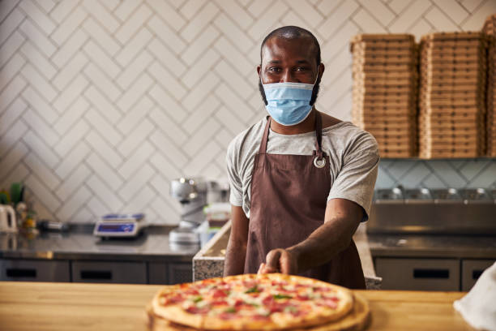
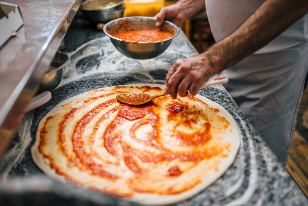
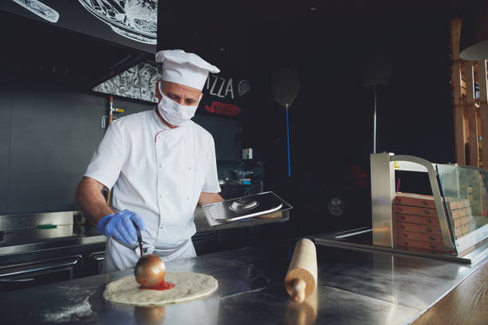

<section class="text-gray-600 body-font">
    <div class="container  py-10 ml-5 sm:ml-20">
      <div class="flex flex-wrap w-full mb-10 py-4">
        <div class="w-full mb-6 lg:mb-0">
          <h1 class="sm:text-4xl text-5xl font-semibold title-font mb-2 text-gray-900">About</h1>
          <div class="h-1 w-20 bg-teal-500 rounded"></div>
        </div>
      </div>
      <div>
        <div>
            <h1 class="text-2xl font-semibold sm:my-5 ml-5">Restaurant story</h1>
            <p class="text-justify text-lg">Organizer, Illia Matsko, opened the first ‘Pepperonis’ Restaurant in Los Alamitos, California, on September 27, 1977. Today, there are 37 areas all through Arizona, California, Illinois, Louisiana, Nevada, Oregon, Tennessee, and Washington.
                ‘Pepperonis’ Restaurants are well known with a substantial gathering of people, including families, kids, seniors, and business experts. Our benevolent condition is perfect for praising unique events, facilitating a business lunch, or assembling for a flavorful dinner with loved ones.
                Open day by day for lunch and dinner,’Pepperois’ offers a choice of naturally arranged things utilizing just the best fixings accessible. Top picks incorporate Certified Angus Beef®, crisp fish, rotisserie chicken, and infant back pork ribs.
                New prepared pot pie, strength plates of mixed greens, wood-let go pizzas, pasta, sandwiches, burgers, and more.’Pepperonis’s heated merchandise and treats, including our Six-Layer Chocolate Motherlode Cake, Scratch Carrot Cake, and delectably rich cream cheddar pies are prevalent top choices with our visitors.</p>
        </div>

        <div>
            <h1 class="text-2xl my-5 ml-5 font-semibold">About us</h1>
            <p class="text-justify text-lg">Our menu highlights things that utilize the sound and fragrant flavors, however, forget the stuffing ghee, spread, oil, and overwhelming cream.
                ‘Pepperonis’ has developed to incorporate four superb takeout areas in Toronto, with additional to come sooner rather than later. Our group takes pride in the way that we can furnish our new and faithful clients with extraordinary tasting Indian-roused nourishment that is not normal for that some other Indian eateries you visit.
                We perceive that a few people are as yet searching for run-of-the-mill Indian nourishment, and that is fine with us. Our disclaimer is that on the off chance that you’re anticipating overwhelming, slick, undesirable Indian nourishment, ‘Pepperonis’ isn’t the place for you.</p>
            <div class="mt-7 grid grid-cols-3 gap-6">
                
                
                
            </div>
        </div>
      </div>
    </div>
</section>
